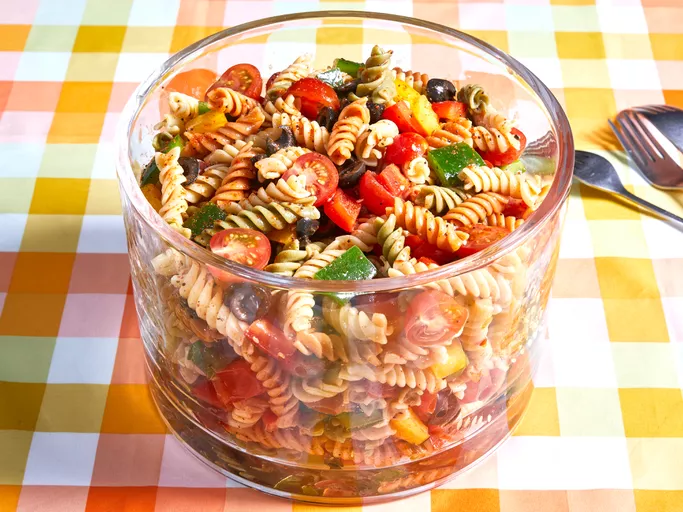

Description:
This pasta salad is nice and colorful, easy to make, and great for summer picnics or parties. The recipe was given to me by a dear friend many years ago, and I’ve been making it ever since!
Ingredients:
- 1 pound tri-colored spiral pasta
- 1 bottle italian-style salad dressing
- 16 tablespoons salad seasoning mix
- 2 cups cherry tomato, diced
- 1 green bell pepper, chopped
- 1 red bell pepper, diced
- Half yellow bell pepper, chopped
- 1 can black olives, chopped
Steps:
- Gather all ingredients.
- Bring a large pot of lightly salted water to a boil. Cook pasta in the boiling water, stirring occasionally, until tender yet firm to the bite, about 10 to 12 minutes; rinse under cold water and drain.
- Whisk Italian dressing and salad spice mix together until smooth. Combine pasta, tomatoes, bell peppers, and olives in a salad bowl.
- Pour dressing over salad and toss to coat.
- For the best flavor, refrigerate the pasta salad for 8 hours to overnight.
- Enjoy!